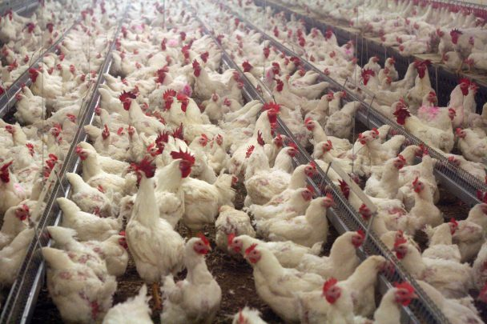

Změny probíhající v přírodě kolem nás
Denně se kolem nás koná spousty katastrof. Některé se nás bezprostředně týkají... Daleko víc se jich, ale děje kousek od nás. Ať už ve vedlejší ulici, ve vejdlejším městě, ve vedlejší zemy nebo klidně na vedlejším kontynentu. To, že se daný problém či danná katastrofa děje daleko od našeho domu a našich blízkých však NEZNAMENÁ, že se o ní zajímat nemusíte!!!
Tato stránka vznikla ve snaze upozornit na mnohé problémy tohoto světa, které se buďto neřeší, a nebo se řeší příliš málo.
Je důležité podotknout, že můžete pomoci i malými činy... Není potřeba se jít osobně zúčastnit hašení lesa v amazonii. Naopak i málé činy jakožto například recyklace odpadků hodně pomáhá a vás to NIC NESTOJÍ.
Věděli jste například, že Česká republika patří mezi země, které třídí nejvíc na světě :-)Jedny z hlavních problémů...

snímky z hořícího pralesu Amazonie

Nenechte vyhazovat odpad do oceanů. Mimo jiné se do nich zachycují ryby, želvy, ...
Špatný je i odpad který není vidět
NEPOUŽÍVEJTE JEDNORÁZOVÉ PLASYJednorázové plasty
jednodužše řečeno: plasty které se jednou použijí a poté se hned vyhodí.
patří mezi ně třeba: kelímky
Přístě až vám v kavárně nabídnou kávu do kelímku, rozmyslete se, jestli si ji přeci jen nemůžete nechat dát do hrnečku nebo do kelímku vlastního. V starbucks dokonce budete mít kávu o deset korun levnější pokud vám kelímek nebudou muset dávat. A to se vyplatí ;-)!
Další zajímavý tip jak štřit jednorázovýmíi odpady je rovnou chodit do tkz: "bezobalových obchodů"

Do vzduchu sevypouští strašné množství různých plynů. A to jak toxických tak netoxisckých. A proto nepodporujte vypoužtění těchto látek!
ŠKODÍ TO I VÁM NEJEN LIDEM KTERÉ NEZNÁTE A ŽIJÍ DALEKO... zvířata se:
- Překrmují
- Vpravujou se jim hormony na rychlejší růst s polu s kolikrát zbytečnými preventivnímy léky
- Pěstují se na velice malých prostorech. Tím danné místo vždy totálně zdevastují!
Pokud se chcete o špatném chování ke zvířatům a probllémy související s nimy tak se můžete kouknout na další stránku věnující se zvířatům.

odpad vypouštěn do vodstev
pro některé je normální brodit se v odpadek vznikají dokonce ostrovy z plastua to jak vytvořené lidmy tak vzniklé samy díly podvodním proudům